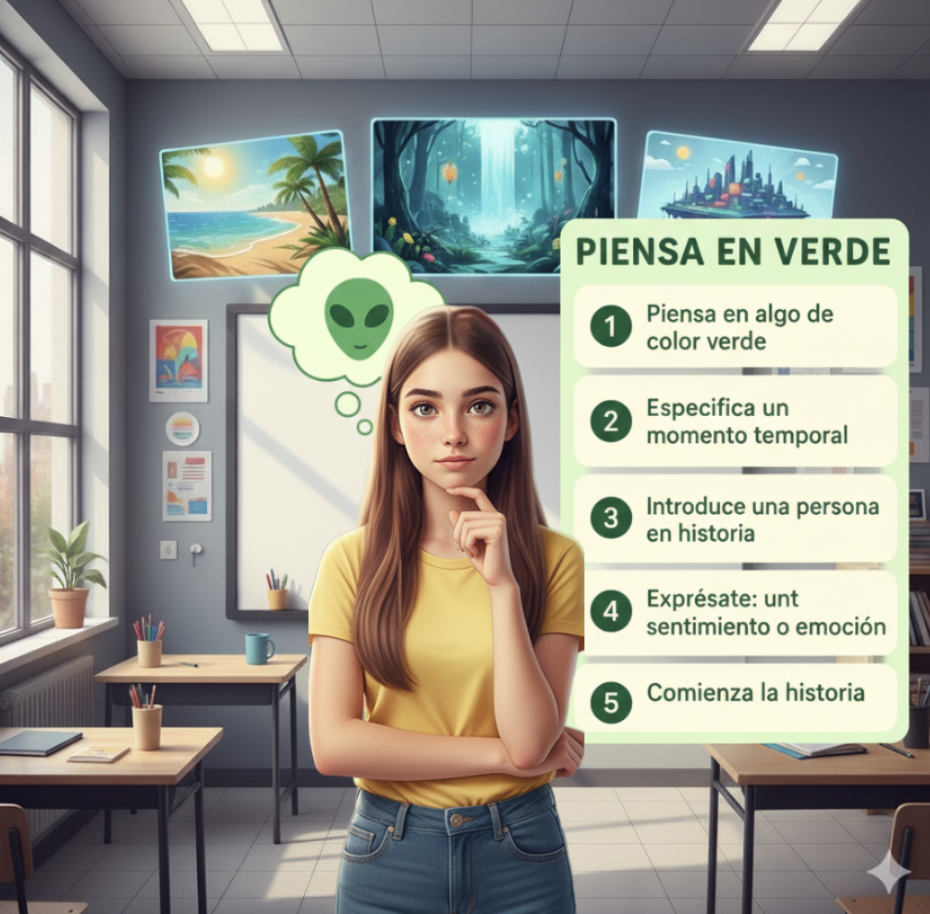
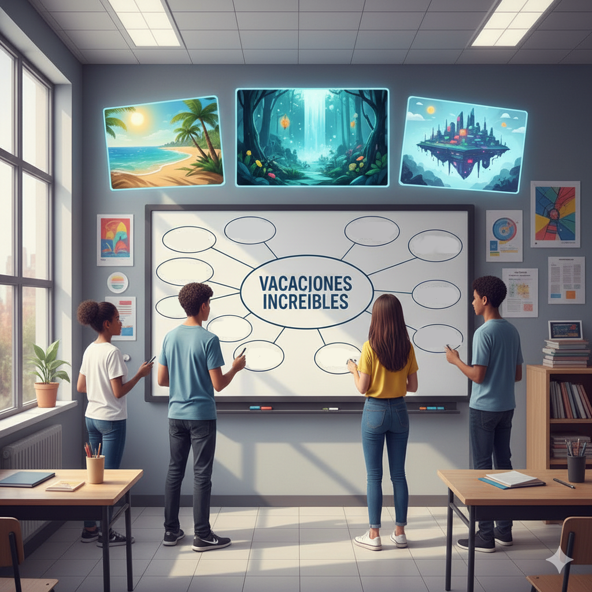

Mini actividades creativas
El objetivo de las siguientes actividades es demostrar al alumnado que todas las personas poseen creatividad, aunque en un principio puedan pensar lo contrario. Para lograrlo, primero exploraremos las características de la creatividad y, a continuación, realizaremos ejercicios sencillos que les permitirán descubrir por sí mismos su potencial creativo. Finalmente, las actividades culminarán en la creación de una historia utilizando dos métodos diferentes.
Puedes empezar la clase preguntando:
- ¿Quién se considera creativo?
- ¿Se puede aprender la creatividad?
- ¿Quèn no se considera creativo?
Es buena práctica apuntar los resultados para volver a realizar las preguntas una vez acabado el proyecto y ver cuantos han cambiado de opinión. Posteriormente les cuentas las características de la creatividad y haces las mini actividades.
Características de la creatividad
Según Guilford y Torrance, las características del pensamiento creativo son las siguientes:
- Originalidad: producción de respuestas únicas, ingeniosas o novedosas.
- Fluidez: producción y expresión de gran cantidad de ideas o soluciones a un problema (aspecto cuantitativo de la producción).
- Flexibilidad: generación de distintas formas de hacer o emplear las cosas, capacidad de reestructurar situaciones o dar situaciones diferentes ante un problema (lo que se conoce como pensamiento fuera de la caja).
- Elaboración: desarrollar la idea original incorporando detalles y aportaciones que la enriquezcan y la hagan más completa.
- Sensibilidad: capacidad de estar abierto a descubrir diferencias, dificultades e imperfecciones. Actitud receptiva frente a lo nuevo, a los problemas del mundo, a las dificultades de las personas.
Actividad 1: Usos diferentes para un objeto.
Muestra por ejemplo un objeto cualquiera y pídeles que piensen otros usos para es objeto. Por ejemplo si muestras una zapatilla, esta podría servir como maceta. Les dejas 60 segundos, papel y algo para escribir. Una vez terminado el tiempo preguntas al alumnado por sus respuestas y anotas en una tabla en la pizarra el número de respuestas de cada alumno.
Actividad 2: Escribe o dibuja otros usos para cada uno de los círculos.
Muestra esta imagen con 24 círculos y pide al alumnado que dibujen esos 24 círculos. Tiene. 60 segundos para dibujar encima y convertir cada círculo en otra cosa. Por ejemplo si dibujas un círculo más pequeño lo conviertes en un donuts. Una vez acabado preguntas al alumnado lo que ha hecho y anotas el número de respuestas en la pizarra en otra columna pegada a la actividad 1.
Si te fijas en la actividad 2, el alumnado ha dado más respuestas que en la actividad 1. Pregúntale al alumnado por qué puede ser esto y a ver que conclusiones sacan.
Actividad 3: Piensa en verde

Con esta actividad vamos a enseñarles cómo crear una historia rápidamente. Para ello, vas a ir saltando de un alumno a otro de forma ágil.
- Le preguntas a un alumno que piense en algo de color verde.
- A otro le preguntas que especifique un momento temporal; por la mañana, etc.
- Otro alumno debe introducir una persona en la historia: alguien famoso o no, un abuelo o chica joven, lo que quiera el alumno
- Otro alumno debe decir una sensación o emoción: está triste, siente frío, etc
- El siguiente alumno ya tiene que comenzar la historia con los elementos proporcionados anteriormente. Por ejemplo si pensaron en un alienígena verde, en el invierno, un abuelo y sensación de mucho frío, el alumno podría comenzar..."El viento cortaba como cuchillas mientras el abuelo encendía la chimenea, temblando bajo su abrigo. De repente, un destello verde iluminó la nieve: un alienígena, perdido y temblando, apareció frente a ellos.."
- En ese momento, pides a otro alumno que continúe la historia. Puedes darle un “ancla” para orientarle o simplemente dejar que continúe. Por ejemplo, un ancla podría ser: "el alienígena habla y te entiendes con él telepáticamente". A partir de ahí, el alumno sigue la historia según su creatividad.
- Vuelves a llamar a otro alumno para que siga la historia anterior y así sucesivamente.
Este método permite crear una historia rápidamente con diferentes anclas, en este caso, algo verde, un alienígena, en invierno, etc. La historia no tiene que ser perfecta; la idea es que el alumnado tenga un punto de partida con el que trabajar de manera creativa y rápida. En menos de cinco minutos ya tendrán algo con lo que empezar que posteriormente pueden modificar y mejorar.
Actividad 4: Técnica "Question bursts”

La técnica Question Bursts es una herramienta dinámica y eficaz para generar ideas de forma rápida. Consiste en que los estudiantes, a partir de un tema o pregunta inicial, se den un tiempo limitado (por ejemplo, cinco minutos) para escribir la mayor cantidad posible de preguntas abiertas relacionadas. Por ejemplo, si el tema es "Vacaciones increíbles", los alumnos podrían plantear preguntas como: ¿Qué tipo de actividades podríamos hacer para que fueran inolvidables?, o ¿Cuál sería el clima ideal para disfrutarlas al máximo?. El objetivo principal de este ejercicio es utilizar las respuestas a estas preguntas como el punto de partida para construir una historia. Al responder a cada una de las interrogantes, los estudiantes no solo recopilan detalles sobre el escenario, los personajes, la trama y el ambiente, sino que también estructuran de manera subconsciente los elementos clave de una narrativa, logrando así un borrador inicial y un marco creativo que posteriormente pueden desarrollar y pulir en una historia más completa y detallada.